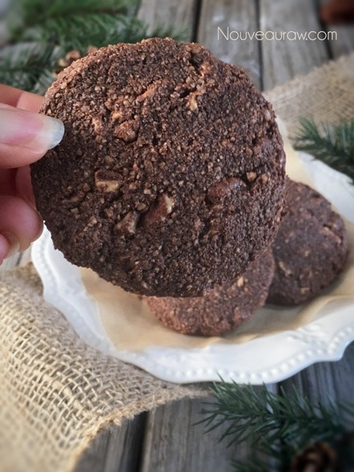
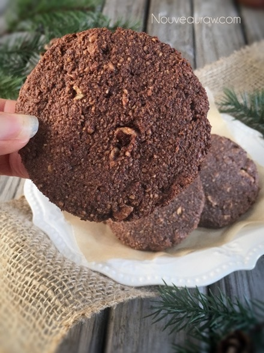

Chocolate Pecan Cookies
~ raw, vegan, gluten-free ~
Hello chocolate lovers! Let us come together in unity as we share the common love for chocolate! Chocolate Pecan Cookies…This is a wonderful dough to work with. It is rather pliable making it really easy to mold. It doesn’t stick to your hands and if you find that it does, add a smidgen bit more almond meal. I found that as I was rolling them into balls during the first stage a light build up of dough was sticking to my palms. So, I found it helpful to rinse my hands every once in a while.
You could easily add the pecans in during the food processor process but I wanted chunks of nuts, I wanted that crunch factor. Raw recipes are so forgiving and offer a lot of flexibility. You can shape them into any size that you want, any shape, and you can tweak the flavors to fit whatever your little heart desires.
This chocolate cookie is firm on the outside but chewy on the inside. It all depends on how long you leave them in the dehydrator. Just be careful that you don’t over-dry them, causing a chalky mouth-feel. My intention was to create a chocolate cookie that was lower in sweetener than average. So please taste the batter as you build the recipe and feel free to add more if you wish.
P.S. I have included a baking option for those of you who don’t own a dehydrator. You are still light years ahead of purchasing commercially processed cookies. So I am proud of you for being here. I do recommend in time that you invest in one as it will open up a whole new culinary world to you. :) I highly recommend the 9 tray Excalibur dehydrator. When baking these cookies, don’t let the lack of browning fool you into to baking them longer. They will dry out quickly. I found 13-15 minutes was the sweet spot for my oven.
Personally, I prefer the flavor and texture of the raw version over the baked. The flavors are more pronounced and the texture is chewier. I created this recipe on Dec. 6th, 2010. I decided to bump it up in the cookie ranking because it deserves a little attention. hehe I hope you enjoy the recipe. Blessings, amie sue
Yields 15 (1/4 cup) cookies
- 3 cups raw almond flour
- 1/2 cup ground flax seeds
- 1/2 cup raw cacao powder
- 1/4 tsp Himalayan pink salt
- 1/3 cup cold-pressed olive oil or coconut oil, melted
- 1/3 cup water
- 1/3 cup maple syrup
- 1 Tbsp vanilla extract
- 1/2 tsp almond extract
- 1 cup raw pecans, soaked & chopped
Preparation:
- In the food processor mix the almond flour, ground flax, cacao powder, and salt just until combined.
- Add the oil, water, sweetener, vanilla, and almond extract. Process until well blended.
- Transfer your batter to a bowl and fold in your chopped pecans.
- With a 1/4 cup measuring cookie scoop, scoop out the dough and place it in the palm of your hand.
- Slightly flatten and place on the mesh sheet that comes with the dehydrator.
- Dehydrate 1 hour at 145 degrees (F), then reduce to 115 degrees (F) and continue to dry for at least 5 hours or until desired dryness is achieved.
- You could do many things with this dough. You could simply leave them in the shape of a ball and roll them in almond meal or shredded coconut. You can easily make them any size you wish. I made mine rather small tonight because I am taking them to work tomorrow for a tasting.
Baking option:
- Preheat the oven to 350 degrees (F).
- Line a baking sheet with parchment paper and place the cookies at least 1” apart. These cookies won’t flatten while they cook, you will need to help them by slightly flattening them with your fingers.
- Bake for about 15 minutes. Often times ovens run at different temperatures regardless of what the dial says so please check in on the cookies about every 5 minutes for the first batch. Document the time it takes for the next tray or batch.
- This cookie bakes up with a drier, crunchier texture. Don’t over-bake!
- To learn more about maple syrup by clicking (here).
- What is raw cacao powder?
- For tips on working with raw cacao butter, click (here).
- Why do I specify Ceylon cinnamon? Click (here) to learn why.
- What is Himalayan pink salt and does it really matter? Click (here) to read more about it.
- Is coconut butter the same as coconut oil? Click (here) to find out.
- Learn how to grind your own flaxseeds for ultimate freshness and nutrition. Click (here).
Culinary Explanations:
- Why do I start the dehydrator at 145 degrees (F)? Click (here) to learn the reason behind this.
- When working with fresh ingredients it is important to taste test as you build a recipe. Learn why (here).
This is a picture of the raw version…

Baked version… a slight difference but nothing to write home about. :)

© AmieSue.com